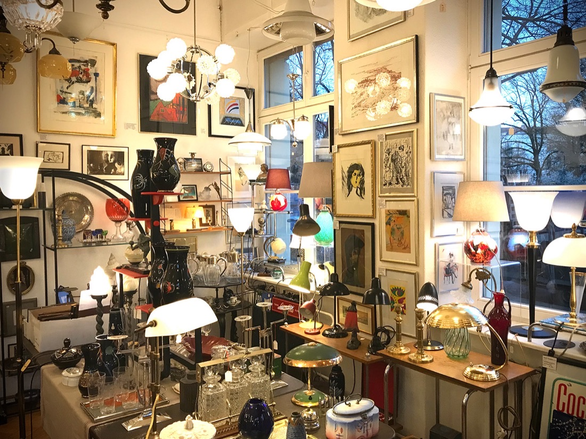

Lampen
Ein Schwerpunkt des Hauses: hochwertige Leuchten – vor allem Deckenleuchten aus Jugendstil und Art déco.
Originale Lampen aus der ersten Hälfte des 20. Jahrhunderts geben jedem Raum Charakter. Jedes Stück ist mit feinem Gespür für das Ausgefallene ausgesucht – von handwerklicher Qualität und mit Geschichte.
- Deckenleuchten: der Schwerpunkt – Jugendstil und Art déco
- Tisch-, Wand- & Hängeleuchten: immer wieder im wechselnden Angebot
- Material: häufig Messing mit Opal- und Milchglas
Die Auswahl wechselt laufend – am besten persönlich im Laden ansehen. Öffnungszeiten & Anfahrt →
